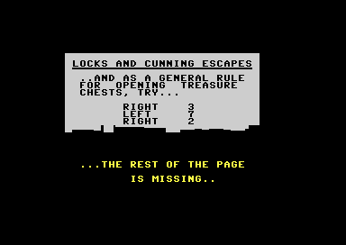
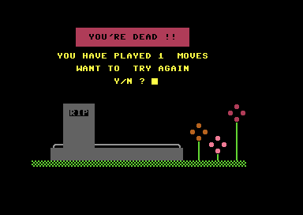
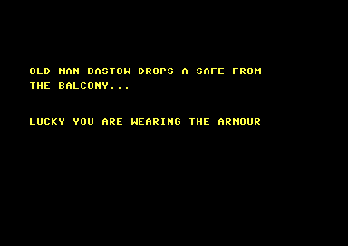
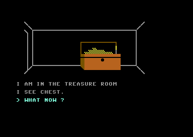

<meta charset="utf-8">
<meta name="viewport" content="width=device-width, initial-scale=1">
<title>{{title}}</title>
<link rel="preconnect" href="https://fonts.googleapis.com">
<link rel="stylesheet" href="https://fonts.googleapis.com/css2?family=Lato:wght@400;700;900&family=IBM+Plex+Mono:wght@400;500&display=swap">
<link rel="stylesheet" href="reference/bastow-page.css">
<!-- tabs -->
<header class="hero">
  <p class="eyebrow">{{platform}} · {{year}} · {{publisher}}</p>
  <h1>{{title}}</h1>
  <p class="sub">Eight stages of puzzles lead from the locked gates to a chest in a secret room, and three things can kill you on the way: the dogs, the dark, and a skeleton.</p>
</header>
<main class="wrap">
<section id="chain">
  <h2 class="t">The order of the puzzles</h2>
  <p>The order below is the one the game’s flags force, taken from the 225 commands of a winning route that the game accepted in full.<sup class="fn"><a href="about.html#src-4">4</a></sup> Each stage’s flag is a variable the program sets, such as <code>BM</code> for the mailbox and <code>KK</code> for the shed. The <a href="levels.html#places">Maps page</a> shows each place named here.</p>
  <ol>
    <li><b>The gates.</b> Break a branch off the <a href="levels.html#place-6">dead tree</a> and use it to reach the iron key lying inside the gate. The key is found by looking at the gate.</li>
    <li><b>The mailbox and the gate.</b> The iron key opens the mailbox by the manor wall. The mailbox gives a letter and a torch. The gate can then be unlocked and opened, and opening it <a href="#dogs">starts the dogs</a>.</li>
    <li><b>The shed.</b> Looking at the <a href="levels.html#place-8">storage shed</a> from the garden turns up a ladder. Inside, a case hides a trapdoor, shown when the case is moved, and an apple, found when it is opened and looked into. The branch is too heavy to carry far: after a few moves the player is too tired to leave the shed, so the branch is dropped there.</li>
    <li><b>Below the trapdoor.</b> The <a href="levels.html#place-9">dim room</a> holds a small box. South of it the tunnel ends at a pit of snakes, which the branch bridges. Beyond, the corridor’s toolbox has a crowbar, which removes the beam that bars the dim room’s door into the hall.</li>
    <li><b>The hall.</b> A clock in the hall holds a knife. With the apple on the ground, wherever it lies, the knife cuts it open and a small key falls out. The small key opens the small box, whose note reads <code>VI</code>.</li>
    <li><b>The closet and the study.</b> Moving the crate in the <a href="levels.html#place-21">closet</a> shows a brass key, and then the old man knocks the player out. The brass key is afterwards found in the mailbox. The brass key opens the study door, and in the study a drawer and a button lead to a hole through to the stone cell.</li>
    <li><b>The armour and the library.</b> Old man Bastow drops a <a href="#safe">safe from the balcony</a>. The armour from the wine cellar, worn, saves the player and leads into the library, where a book gives the turns for the combination: right 3, left 7, right 2.</li>
    <li><b>The robot and the chest.</b> Three buckets of water from the bathroom, thrown through the hole, short out the robot. The combination, typed in one line, opens the chest. The gold sets a skeleton after the player, who has five moves to reach the shed, and then the way out is west of the gravel path.</li>
  </ol>
  <figure class="overview-shot"><figcaption>The library’s book gives the turns, then says the rest of the page is missing. The <a href="discoveries.html#combination">combination</a> is worked out from them.</figcaption></figure>
</section>

<section id="pack">
  <h2 class="t">The pack</h2>
  <p>The player carries at most five things. The command <code>i</code> lists them, and an empty pack prints <code>not a cracker !</code> in place of a list. Five slots is a hard limit: the game’s save file holds exactly five.</p>
  <p>A branch is the exception to carrying freely. Each move made with it in the pack adds one to a counter, <code>HB</code>, and after the fourth the player is <i>too tired</i>, a flag <code>HJ</code>. A tired player in the storage shed cannot go north or down the trapdoor until the branch is dropped there, and dropping it in the shed clears both counters.</p>
</section>

<section id="dogs">
  <h2 class="t">The dogs</h2>
  <p>Opening the gate sets a flag, <code>PB</code>. From then on every move made out of hiding adds one to a counter, <code>PA</code>. At one the game prints <code>i hear dogs howling !!</code>, from three upward every move prints <code>bark!  bark!  bark!</code>, and above seven the dogs attack and the player dies.</p>
  <p>Three places are safe because they set the hiding flag and reset the count to zero: the top of the dead tree, the storage shed and the window ledge. The howling and barking were seen in the emulator. The death itself was read from the code, since the route never lets the counter run out.</p>
  <figure class="overview-shot"><figcaption>The death screen. The screen reports the moves played and asks whether to try again; answering <code>n</code> clears the program with <code>NEW</code>.</figcaption></figure>
</section>

<section id="dark">
  <h2 class="t">The dark</h2>
  <p>The torch from the mailbox is lit with <code>light</code>. Four places are dark: the dim room, the tunnel, the corridor and the cell. Entering one without the torch lit kills the player. The dark room and the laboratory, despite the first’s name, test nothing. The route always lit the torch first, so the death was read from the code, not seen.</p>
</section>

<section id="safe">
  <h2 class="t">The safe, the robot and the skeleton</h2>
  <p>On the foyer’s balcony side the old man drops a safe, shown by a sprite that falls down the screen. Without the armour the screen reads “as your shoulders and ankles meet you realise that…” and the game ends. With it, the player survives and is moved to the library.</p>
  <figure class="overview-shot"><figcaption>The safe falls past the balcony door and the armour saves the player.</figcaption></figure>
  <p>The robot in the secret room pushes the player back each time they enter until it has taken three throws of water. A bucket is filled in the bathroom, carried to the cell, and thrown through the hole. Each throw empties the bucket and adds one to a counter, <code>HT</code>.</p>
  <p>Taking the gold sets a flag that rings bells on the next move. When the player enters the laboratory afterwards the skeleton wakes and chases. Each move adds one to its counter, and the fifth kills. Reaching the shed sets the count back to zero and the dog counter to three, but the skeleton stays awake and counts again on later moves.</p>
  <figure class="overview-shot"><figcaption>The treasure room after the chest is opened.</figcaption></figure>
</section>

<section id="ending">
  <h2 class="t">The ending</h2>
  <p>Going west from the gravel path after the chest has been opened wins the game with the words “thats it you’ve got the gold … and your life!” and then clears the program. The test is the chest’s flag and not whether the gold is in the pack, so <a href="discoveries.html#nogold">the game can be won without the gold</a>.</p>
</section>
</main>
<footer style="margin:16px 0 0;padding:22px var(--gx) 0;border-top:1px solid #e0ded8;font-family:'IBM Plex Mono',ui-monospace,Menlo,monospace;font-size:12px;color:#80838a"><a href="https://github.com/gamesexplained/gamesexplained" style="color:#1f5fa8;text-decoration:none">GitHub</a> · <a href="https://discord.gg/3V9GWyRDWV" style="color:#1f5fa8;text-decoration:none">Discord</a><br>© Games Explained contributors. Write-ups, facts and symbol maps are available under <a href="https://creativecommons.org/licenses/by-sa/4.0/" style="color:#1f5fa8;text-decoration:none">CC BY-SA 4.0</a>; code under <a href="https://opensource.org/licenses/MIT" style="color:#1f5fa8;text-decoration:none">MIT</a></footer>
